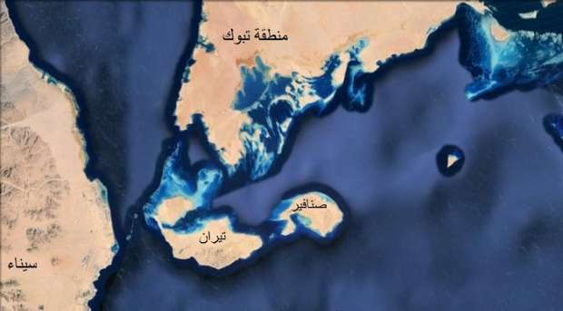

أحدث الأخبار
- باولو يقود هجوم الزمالك أمام رينجرز في دوري الأبطال
- المالية تعفي المطاعم غير السياحية من ضريبة القيمة المضافة بشروط
- "القضاء الإداري" يلزم الجامعة الأمريكية بتحصيل مصروفاتها بالجنيه المصري
- البورصة ترتفع بنسبة 0.52% في نهاية التعاملات
- إعادة فتح موانىء السويس بعد تحسن الأحوال الجوية
- محام: حفظ التحقيقات مع منى مينا في اتهامها بنشر أخبار كاذبة
- نجوى سالم .. كوميديانة انتهت حياتها بمأساة
- الأرصاد: طقس مائل للدفء الاثنين.. والعظمى في القاهرة 22
الكوميديا السوداء- بعد حكم تيران وصنافير أين الأرنب والاستقالة؟
عقب حكم المحكمة الإدارية العليا ببطلان اتفاقية ترسيم الحدود بين مصر والسعودية، مجلس الدولة، 16 يناير 2017، تصوير: مروة صابر- أصوات مصرية
حكم نهائي للقضاء المصري ببطلان اتفاقية نقل تبعية جزيرتي تيران وصنافير من مصر إلى السعودية يظهر المفارقة في مواقف مَنْ راهن على عكس ذلك. الإعلاميان أحمد موسى ومصطفى بكري في دائرة الكوميديا السوداء لهذا الأسبوع.
الاثنين الماضي 16 يناير الجاري رفضت المحكمة الإدارية العليا طعنا قدمته هيئة قضايا الدولة (الممثلة للحكومة) على حكم سابق للقضاء الإداري الأدنى ببطلان اتفاقية ترسيم الحدود الموقعة بين مصر والسعودية (في أبريل 2016) والتي بموجبها تُنقل تبعية جزيرتي تيران وصنافير إلى المملكة.

صورة توضح الموقع الجغرافي لجزيرتي تيران وصنافير في البحر الأحمر - ويكيبيديا
وكان الاتفاق أثار ردود فعل معارضة للرئيس عبد الفتاح السيسي والحكومة واعتبره مصريون تنازلا عن جزء من أرضهم.
تقع جزيرة تيران عند مدخل خليج العقبة، على امتدادٍ يتسم بأهمية استراتيجية يطلق عليه "مضيق تيران"، وهو طريق إسرائيل لدخول البحر الأحمر.
ولتيران وصنافير أهمية استراتيجية؛ إذ تتحكمان في مدخل خليج العقبة، ومينائي العقبة في الأردن، وإيلات في إسرائيل.
الأرنب
في الفيديو التالي أعلن أحمد موسى، وهو مقدم برنامج تلفزيوني على فضائية خاصة، عن جائزة مليون جنيه لمن يستطيع أن يأتي بوثيقة واحدة تثبت مصرية جزيرتي تيران وصنافير في البحر الأحمر.
وقال بالعامية "مستني حد يلاقي الوثيقة اللي الدولة كلها مش لاقياها. من سنة 1990 الدولة مش لاقية الوثيقة التي تثبت ملكيتنا للجزيرتين".
وتتمركز القوات المصرية في الجزيرتين منذ عام 1950. وكانتا من بين القواعد العسكرية الاستراتيجية لمصر في فترة العدوان الثلاثي عام 1956، واستولت إسرائيل عليهما في ذلك الوقت.
لكن حكومة شريف إسماعيل تقول إن الجزيرتين كانتا تخضعان فقط للحماية المصرية منذ عام 1950 بناء على طلب من الملك عبد العزيز آل سعود مؤسس المملكة العربية السعودية.
وعكف نشطاء ومحامون مصريون على جمع وثائق وخرائط تثبت ملكية مصر للجزيرتين الواقعتين عند مدخل خليج العقبة وقدموها للمحكمة.
وقال القاضي أحمد الشاذلي في منطوق حكمه "لقد وقر واستقر في عقيدة المحكمة أن سيادة مصر على جزيرتي تيران وصنافير مقطوع بها. وأضاف أن الحكومة لم تقدم ثمة وثيقة أو شيء آخر ينال من هذا الأمر".
وعقب الحكم طالب رواد على مواقع التواصل الاجتماعي المذيع أن يقدم الأرنب (حسب تسمية عامية مصرية لمبلغ المليون جنيه) بعد أن خسر الرهان لكن الجائزة التي تحدى بها موسى أي شخص يقول إن تيران وصنافير مصرية تبخرت.
وظهر على الشاشة يحذر من طرد السعودية للمصريين العاملين لديها كرد فعل على حكم القضاء، وقال "لو رجعوا هنا (العاملين في الخليج) محدش هايشغلهم، لا خالد علي ولا حمدين ولا معصوم، محدش هايشغلهم".
لكن مشهد الكوميديا السوداء الرئيسي كان حين تلقى موسى ابن محافظة القاهرة مداخلة هاتفية من محلل سياسي سعودي وسأله موسى عن رد فعل المملكة بعد حكم القضاء فأجاب: نحن ننظر إلى هذا الأمر على أنه قضية داخلية مصرية.
وتوترت العلاقات المصرية والسعودية بعد تصويت مصر لصالح مشروع قرار تدعمه روسيا في مجلس الأمن الدولي بشأن سوريا في أكتوبر الماضي لم يكن متفقا مع موقف السعودية من الأزمة السورية.
استقالة
وبدوره قال مصطفى بكري نائب البرلمان، قبل أيام من الحكم الأخير، عن الرافضين لسعودية الجزيرتين الذي عكف هو في كتاب أصدره على إثبات سعوديتهما "قسما بالله لو لديهم الحقيقة أنا شخصيا سأقف أمام البرلمان وأعلن استقالتي".
وأضاف بكري خلال برنامجه التلفزيوني المُذاع على ذات الفضائية التي يظهر على شاشتها موسى "الوطنية لا تتجزأ. أوعى تعمل وطني في حتة وتكون خاين في حتة تانية. التاريخ بيتقري يا بهاوات".
وتابع: "للأسف هذا زمن الكذب".
وبعد حكم الإدارية العليا اعطى بكري لنفسه مساحة جديدة، وربط تقديم استقالته برفض البرلمان للاتفاقية.
"يمثل رئيس الجمهورية الدولة في علاقاتها الخارجية، ويبرم المعاهدات، ويصدق عليها بعد موافقة مجلس النواب، وتكون لها قوة القانون بعد نشرها وفقًا لأحكام الدستور. ويجب دعوة الناخبين للاستفتاء على معاهدات الصلح والتحالف وما يتعلق بحقوق السيادة، ولا يتم التصديق عليها إلا بعد إعلان نتيجة الاستفتاء بالموافقة. وفى جميع الأحوال لا يجوز إبرام أية معاهدة تخالف أحكام الدستور، أو يترتب عليها التنازل عن أي جزء من إقليم الدولة"- المادة 151 من الدستور
وأقرت الحكومة الاتفاقية يوم 29 ديسمبر وأحالتها إلى مجلس النواب لمناقشتها واتخاذ قرار بشأنها. لكن البرلمان حتى اللحظة لم يحدد موقفه بعد حكم المحكمة ببطلان الاتفاقية.
ويرى بكري أن حكم القضاء جاء متعارضا مع نص المادة 151 من الدستور.
ووضعت تلك المادة في دستور عام 2014 بعد عزل الجيش للرئيس الأسبق محمد مرسي، على خلفية ما أثير عن تعهد مرسي (خلال حكمه) بإعادة حلايب وشلاتين جنوبي مصر إلى السودان رُغم نفي الرئاسة وقتها صحة ما أثير.
وتنتهي المادة بنص: وفى جميع الأحوال لا يجوز إبرام أية معاهدة تخالف أحكام الدستور، أو يترتب عليها التنازل عن أى جزء من إقليم الدولة، وهو ما عولت عليه المحكمة في حكمها.
سؤال
ومنذ ان أثيرت القضية في مطلع العام الماضي، استمات مصريون بينهم بكري وموسى في الدفاع عن ملكية بلد آخر للجزيرتين، لكن المذيعين وحدهما استمرا في المكابرة أمام حكم القضاء الذي طالما طالبا باحترام قراراته بحلوها ومرها، والسؤال: هل يعرف المذيعان صيغة الاعتذار؟ أم أننا بصدد رؤية الأرنب والاستقالة؟
الاخبار المتعلقة


{kind=link}
تعليقات الفيسبوك